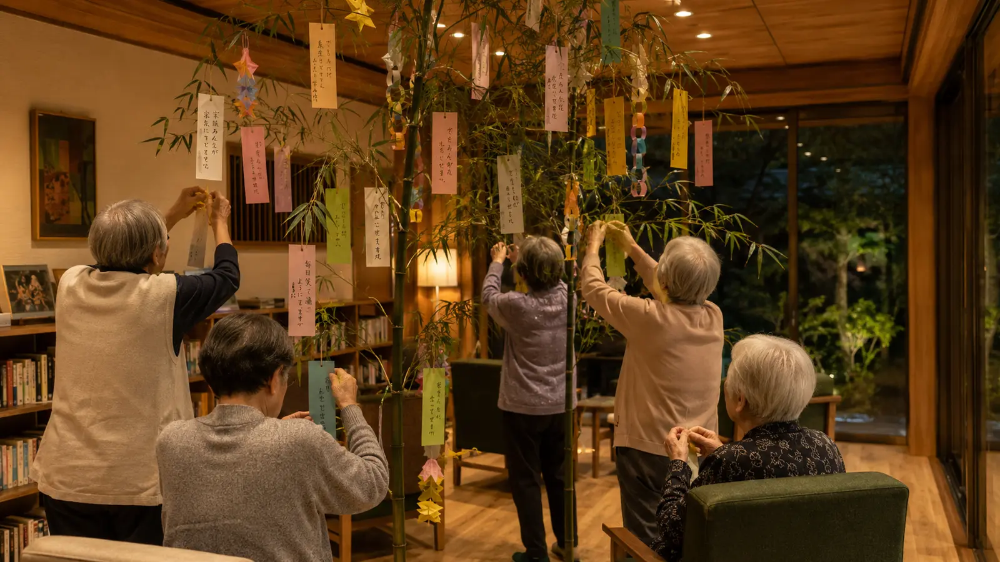
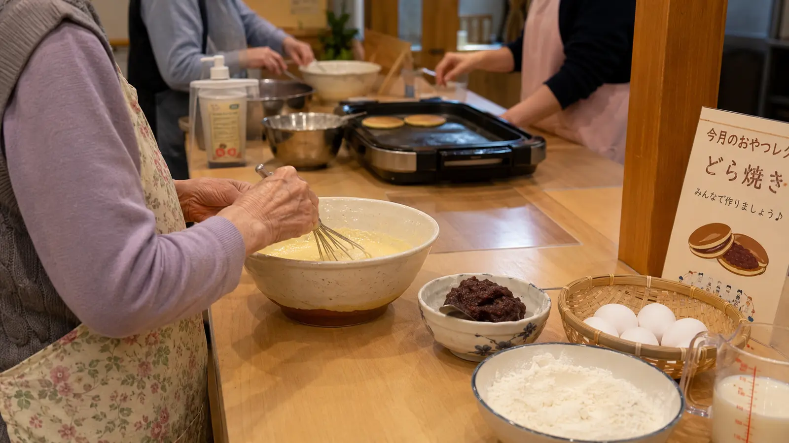
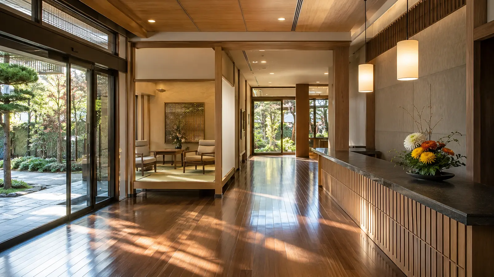

Monthly Care Report
2025年7月 (July 2025)
七夕、そして夏のしつらえ — 月額負担減額の実現
7月は、七夕の短冊作りから始まり、夏のしつらえへ。日本橋らしい老舗の和菓子店から葛切りをお取り寄せして、共用ラウンジを涼やかに整えました。Care Support Pass 経由のご支援が、お一人あたり月額負担 ¥170,000 → ¥150,000 の減額として、いよいよ入居者の皆様の生活に直接還元されはじめました。
Numbers
数字で見る今月
現入居者数
9名
新規ご入居
1名
活動イベント
6回
外部訪問者
15名
In Focus
今月の主な瞬間

Album
今月のひとこま




Story
今月の活動
今月の主な出来事
7月7日の七夕では、共用ラウンジに2m近い大きな笹を立て、入居者の方々と一緒に色とりどりの短冊に願い事を書きました。ある入居者の方は「曾孫が無事に生まれますように」、別の方は「もう少し、ここで皆さんと過ごしたい」と書いて飾ってくださいました。
地域連携の進捗
中旬には、日本橋の老舗和菓子店「日本橋屋」さんから葛切りをお取り寄せして、夏の和菓子茶会を開催。地域の老舗とのご縁を大切に、入居者の方々にも「日本橋ならではの楽しみ」を感じていただいています。
月額負担の減額を実現
Care Support Pass による前月までの累計支援額 ¥1,200,000 を原資に、7月より入居者お一人あたりの月額負担を ¥170,000 → ¥150,000 に減額しました。「年金生活で月¥2万円が浮くのは大きい」「家族からの仕送りを少し減らせる」── 早速ご家族からも喜びの声を頂いています。
来月の予定
- 8月初旬: 屋上庭園で夏野菜の収穫
- 8月10日: 夏祭り (盆踊り・かき氷・くじ引き)
- 8月15日: お盆の精霊棚を設置
- 8月下旬: 暑さ対策の見回り強化 (毎日3回 → 4回へ)
Care Support Pass · Finance
支援者数 と 収支報告
支援者数 / 目標 25万人
15.2%
0
目標 250,000名 / 月¥25,000,000
15.2%
当月 支援者数
38,000名
当月 支援額
¥3,800,000
累計 支援額
¥5,000,000
支援金の使い道 — 2025年7月
入居者お一人あたり月額負担を ¥170,000 → ¥150,000 に減額(全入居者対象、月¥20,000 × 9名 = 月¥180,000の負担軽減)。
From the Director